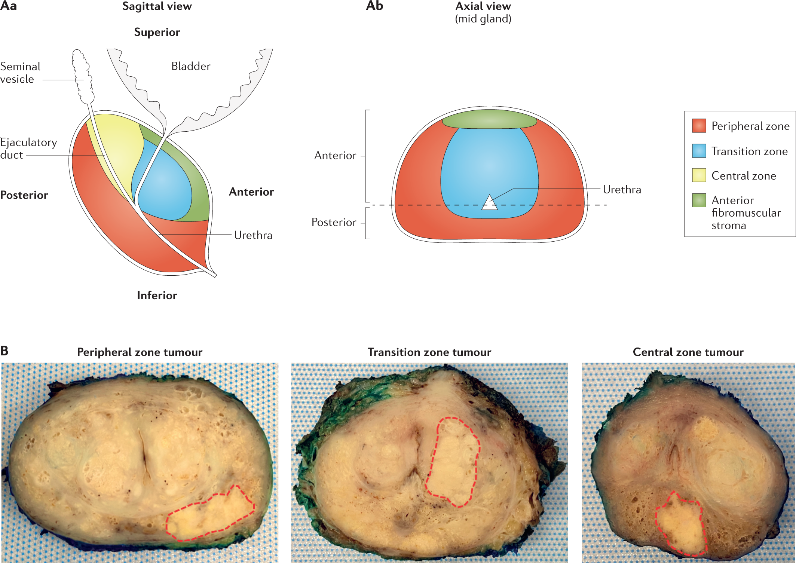

Prostatakarzinom
Was ist die Prostata
Die Prostata ist eine ca. vier Zentimeter große walnussförmige Drüse. Sie sitzt direkt unterhalb der Harnblase und umschließt dort ringförmig die Harnröhre, die den Urin von der Blase durch die Prostata und den Penis bis zur Eichel leitet. An der Rückseite grenzt sie an den Enddarm (Rektum). Im Bereich der Prostata laufen also Harn- und Samenwege zusammen.1
Bei einem zwanzigjährigen Mann wiegt die Prostata etwa 20 Gramm. Ihr Gewicht nimmt im Laufe des Lebens zu und kann auf über 100 Gramm anwachsen.
Die Prostata lässt sich in drei verschiedene Zonen einteilen, die hier von innen nach außen aufgeführt sind und die Harnröhre wie Schichten einer Zwiebel umschließen:2
Die Übergangszone befindet sich auf der Innenseite der Drüse und ist der kleinste Teil der Prostata (etwa 10 %). Sie umgibt die Harnröhre zwischen der Harnblase und dem oberen Drittel der Harnröhre.
Die zentrale Zone umgibt die Übergangszone und macht etwa ein Viertel der Gesamtmasse der Prostata aus. Hier befindet sich der gemeinsame Ausführungsgang der Prostata, des Samenleiters und der Samenblasen. Dieser Gang wird auch als Ejakulationsgang (Ductus ejaculatorius) bezeichnet.
Die periphere Zone stellt den Hauptteil der Prostata dar - etwa 70 % der Gewebemasse sind Teil der peripheren Zone.

Funktion
Die Hauptfunktion der Prostata besteht darin, einen Teil der Samenflüssigkeit zu produzieren, welche die Samenzellen (Spermien) transportiert. Ein weiterer Teil der Samenflüssigkeit wird in den beiden Samenblasen produziert, die der Prostata außen aufliegen. Weitere Funktionen sind:
Verschluss der Harnröhre bis zur Blase während des Samenergusses: Bei der Ejakulation verschließen die Prostata und der Schließmuskel der Blase die Harnröhre bis zur Blase, um zu verhindern, dass Sperma in die Blase gelangt.
Verschluss der Samenleiter beim Wasserlassen: Beim Wasserlassen verschließt die Zentralzonenmuskulatur die Ausführungsgänge der Prostata, so dass kein Urin eintreten kann.
Hormonstoffwechsel: In der Prostata wird das männliche Sexualhormon Testosteron in eine biologisch aktive Form, DHT (Dihydrotestosteron), umgewandelt.
Wachstum und Funktion der Prostata werden vom männlichen Geschlechtshormon Testosteron gesteuert, das hauptsächlich in den Hoden (Testes) — zu einem geringen Teil aber auch in den Nebennieren — gebildet wird. Ohne die Stimulation durch das Hormon bleibt die Drüse unterentwickelt und bildet kein Sekret.
Die Tatsache, dass die Prostata dem Einfluss von Testosteron unterliegt, kann zur Behandlung des Prostatakrebses genutzt werden.
In der Vorsteherdrüse wird neben der Samenflüssigkeit eine Substanz namens PSA, kurz für Prostata-spezifisches Antigen, gebildet. Sie ist nicht nur in der Samenflüssigkeit, sondern auch im Blut nachweisbar. PSA spielt eine Schlüsselrolle bei der Früherkennung von Prostatakrebs, da bei Prostatakrebs der PSA-Blutwert erhöht sein kann.
Tumorausdehnung
Die Stadien T1-2 N0 M0 werden unter der Bezeichnung lokal begrenztes Prostatakarzinom zusammengefasst. Das lokal fortgeschrittene Prostatakarzinom umfasst die Stadien T3-4 N0 M0. Die Stadien N1 und/oder M1 werden als fortgeschrittenes bzw. metastasiertes Prostatakarzinom bezeichnet.4
| Stadium | Beschreibung |
|---|---|
| T1-2 N0 M0 | Lokal begrenzt |
| T3-4 N0 M0 | Lokal fortgeschritten |
| N1 und/oder M1 | Fortgeschrittenes bzw. metastasiertes Prostatakarzinom |
Wahrscheinlichkeit von Knochenmetastasen
| PSA-Wert (ng/ml) | Wahrscheinlichkeit (%) | Bereich (%) |
|---|---|---|
| <10 | 2,3 | 1,7 - 3,0 |
| 10-19,9 | 6 | 4,6 - 7,6 |
| 20-49,9 | 15,9 | 12,9 - 19,2 |
| 50-99,9 | 39,2 | 29,0 - 41,8 |
| >100 | 74,9 | 70,8 - 78,7 |
das Vorliegen von Knochenmetastasen bei ca. 6 % der Patienten mit einem PSA-Wert von 10-20 ng/ml zu hoch sei, um diese Unsicherheit vor dem Hintergrund einer Entscheidung zu einer Operation zu tolerieren. Aus diesem Grund wurde nach erneuter Abstimmung der Grenzwert 10 ng/ml belassen.4
Wann Staging?
Bei Vorliegen einer folgenden Risikofaktoren soll ein Staging erfolgen.4
| Risikofaktor | Prävalenz von Knochenmetastasen |
|---|---|
| PSA-Wert >10 ng/ml | 6 % |
| Lokal fortgeschrittener Tumor (T3/4) | 47 % |
| Gleason-Score >7 | 28 % |
| Knochenschmerzen oder Anstieg der alkalischen Phosphatase | Nicht spezifiziert |
Häufigkeit nach Zonen
| Prostatazone | Anteil an Prostatakarzinomen | Beschreibung |
|---|---|---|
| Zentrale Zone | 10 % | |
| Transitionalzone | 15–20 % | inzidentelle Karzinome |
| Periphere oder posterolaterale Zone | 70–75 % | manifeste Karzinome |
Überwachung
Von Überdiagnose spricht man, wenn Karzinome entdeckt werden, die den Patienten in seiner Lebenserwartung nicht bedrohen. Sie zu behandeln bedeutet eine Übertherapie.4
Männer mit neu diagnostiziertem PCa und mehreren Komorbiditäten (Charlson Comorbidity Index (CCI)-Wert >2) zeigten unabhängig von ihrem Alter zum Zeitpunkt der Diagnose nach 10 Jahren Nachbeobachtung eine sehr geringe PCa-abhängige Mortalität, so dass hier ein Watchful Waiting diskutiert werden muss.4
Die Tumoraggressivität hatte kaum Einfluss auf das Gesamtüberleben. Hingegen hatten Männer mit einem CCI-Wert <1 ein geringes Risiko, innerhalb von 10 Jahren zu versterben, so dass in dieser Gruppe eine strukturierte Überwachung im niedrigen Risiko bzw. eine aktive Therapie bei höherer Aggressivität erfolgt.4
Eine Aktive Überwachung bei ansonsten gesunden und für eine kurativ intendierte Therapie geeignete Patienten hat das Ziel, eine rechtzeitige aktive Behandlung bis zu einem Zeitpunkt aufzuschieben, an dem sich Hinweise für eine Progression ergeben oder der Patient diese wünscht.4
Die wesentliche Rolle der regelmäßigen PSA-Wertmessung beruht auf der damit verbundenen validen Option, die PSA-Verdopplungszeiten (PSADT) adäquat berechnen und die PSA-Dichte (PSAD) bei ebenfalls durchgeführter mpMRT der Prostata objektiv bestimmen zu können.4
| ISUP-Gruppe | Kontrollintervall |
|---|---|
| Gruppe 1 | Alle 6 Monate |
| Gruppe 2 | Alle 3 Monate |
| Patientengruppe | Zeitpunkt der Re-Biopsie |
|---|---|
| Mit initialer mpMRT | Nach 12–18 Monaten |
| Ohne initiale mpMRT | Innerhalb von 6 Monaten |
Bei signifikantem PSA-Anstieg (Verdopplungszeit <3 Jahre) sollte eine erneute mpMRT mit gezielter und systematischer Re-Biopsie erfolgen. Eine alleinige Progression des PSA-Wertes und/oder einer mpMRT-Läsion sollte nicht zum Abbruch der Aktiven Überwachung führen.4
Die Aktive Überwachung soll beendet werden, bei:
- Upgrading zu ISUP Gruppe 2 mit ungünstigem Risikoprofil*
- Upgrading zu >= ISUP Gruppe 3
- Lokal fortgeschrittenem Tumorstadium (≥cT3 und/oder cN+)
*cribriformes oder intraduktales Wachstum, Anteil Gleason-Muster 4 über 10 %.
Therapie
Patienten mit Prostatakarzinom aller Risikogruppen sollen bei Verwendung einer Standardfraktionierung mit einer Dosis von mindestens 74,0 Gy bis ca. 80 Gy bestrahlt werden.4
Der Stellenwert der moderat hypofraktionierten Strahlentherapie ist trotz zahlreicher abgeschlossener Phase-III-Studien nicht abschließend geklärt, da insgesamt keine ausreichend langen Nachbeobachtungszeiten vorliegen.4
| Risikogruppe | PSA-Wert | Gleason-Score | cT-Kategorie |
|---|---|---|---|
| Niedriges Risiko | <10 ng/ml | 6 | ≤ 2a |
| Intermediäres Risiko | 10–20 ng/ml | 7 | 2b |
| Hohes Risiko | >20 ng/ml | ≥8 | ≥ 2c |
Die Low-Dose-Rate-Brachytherapie (LDR-Brachytherapie oder Seedstherapie) ist für Patienten mit Prostatakarzinom des niedrigen Risikoprofils ein alternatives kuratives Therapieverfahren zur radikalen Prostatektomie und zur perkutanen Strahlentherapie. Dabei hat sich die transperineale Implantation von Jod-125 bzw. Palladium-103-Seeds zu einem Standard entwickelt.4
Patienten mit einem Prostatakarzinom hohen Risikos sollen keine LDR-Monotherapie erhalten.4
Die HDR-Brachytherapie, kombiniert mit der perkutanen Strahlentherapie, ist eine primäre Therapieoption bei Patienten mit Tumoren des mittleren und hohen Risikoprofils.4
Patienten mit einem unilateralen, lokal begrenzten Prostatakarzinom niedrigen Risikos kann eine fokale Therapie angeboten werden, wenn diese sowohl Standardtherapien als auch eine Active Surveillance (AS) ablehnen.4
Patienten mit einem Prostatakarzinom des hohen Risikoprofils, die eine radikale Prostatektomie wünschen, sollen über das erhöhte Risiko für positive Resektionsränder und für ein Krankheitsrezidiv sowie die daraus häufig resultierenden zusätzlich notwendigen Maßnahmen (z. B. hormonablative Therapie, Strahlentherapie) aufgeklärt werden.4
Hier kannst Du die Folien der Vortrag finden.